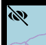

Im folgendem wird versucht das komplexe Thema auf einfache Weise zu veranschaulichen.
Das CodeforCologne Meetup ist ein zwei wöchentliches Treffen um Anwendungen, freie Daten und Visualisierungen zu erstellen und Wissen auszutauschen.

Das Untersuchungsgebiet wird jeden Tag zumindest zweimal aufgenommen. Die Umlaufbahnen (Orbits) des ausgewählten Tages können auch einzeln angewählt werden:

Die Uhrzeit ist in der mittleren Greenwich-Zeit (GMT) angegeben und weicht um minus 1 Stunde von unserer mitteleuropäischen Zeit ab, bzw. minus 2 Stunden von der Mitteleuropäischen Sommerzeit.
Auswahl des Datums:

Es werden die Daten der zwei letzten Orbit Zyklen vorgehalten (32 Tage).
Durch anklicken eines Messpunktes werden die modellierten NO 2 Werte dargestellt, sowie Informationen zur Lage und der Qualität des Wertes .

Des weiteren kann dort der Geodatensatz des entsprechenden Tages im GeoJson Format herunter geladen werden.
Durch ein Anklicken des Augensymbols in der linken oberen Ecke der Bedienwerkzeuge lassen sich diese weg schalten, um auch bei mobilen Endgeräten genug Platz für die Kartendarstellung zu haben:
Der europäische Umweltsatellit Sentinel 5-Precursor (Precursor = Vorgänger) ist im Oktober 2017 gestartet. Der Schwerpunkt liegt auf der Beobachtung der Luftverschmutzung. Die eigentliche Sentinel-5 Mission soll 2021 starten. Der Sentinel 5-P schließt Teile der Datenlücke zwischen dem 2012 ausgefallenen Envisat Satelliten und der zukünftigen Sentinel-5-Mission.
An Bord des Satelliten befindet sich als einziges Messinstrument TROPOMI (TROPOspheric Monitoring Instrument), ein Spektrometer der in verschiedenen Messbereichen die Reflexion (zurückgeworfenes Licht) und Emission (von der Oberfläche selbst ausgesandte Strahlung) der Erdoberfläche misst.
Die folgende Tabelle gibt einen Überblick über die wichtigsten Eckdaten:
| Start | 13. Oktober 2017 |
| Bahnhöhe | 824 km |
| Umlaufzeit | 101 min (polare Bahn) |
| Orbit Cycle | 16 days (14 orbits per day, 227 orbits per cycle) |
| Instrument | TROPOspheric Monitoring Instrument |
| Messung | jede Sekunde eine Fläche von 2670 km × 7 km (ab 8/2019 5,6 km) * |
| Räumliche Auflösung | 7 * 3,5 km, bzw. ab 8/2019 5,6 * 3,5 km |
| Update "Near Real Time" Produkte | maximal drei Stunden nach der Messung |
| Update "Offline" Produkte | innerhalb von 5 Tagen |
| Update "Reprocessed" Produkte | nach Bedarf |
* Ultraviolettes Licht 5,6 * 28 km, kurzwelliges Infrarot 5,6 * 7 km
Die folgende Abbildung stellt die Aufnahmegeometrie und Abdeckung dar:
Abbildung 1: Aufnahmegeometrie und Abdeckung der Sentinel-5P Mission, Quelle & Copyright ESA
Die oben angegebene räumliche Auflösung gilt nur im Nadir, der kürzesten Distanz zwischen dem Satelliten und der Erdoberfläche. Zu den Rändern hin des 2670 km breiten Aufnahmestreifen (Swath-width) nimmt die räumliche Auflösung durch die schräge Aufnahmegeometrie entsprechend ab, auf ca. 9 km.
Aus der Abbildung ist ebenfalls die fast polare Umlaufbahn des Satelliten zu erkennen. Mit dem passiven Spektrometer sind in der Nacht keine Aufnahmen möglich.
Ebenfalls kann der Abbildung die zeitliche Abdeckung der Erde entnommen werden. Da die Aufnahmen im Bereich des Äquators nicht die gesamte Fläche abdecken, dauert es hier bis zu zwei Tagen. Europa wird täglich mindestens einmal erfasst, durch die überlappenden Orbits einige Regionen auch mehrmals.
Es werden die folgenden Frequenzbereiche von dem Spektrometer gemessen (Wellenlänge in nm):
| L1B_RA_BD1 | 270 – 300 (UV) Strahlungsdichte |
| L1B_RA_BD2 | 300 – 320 (UV) Strahlungsdichte |
| L1B_RA_BD3 | 320 – 405 (UVIS) Strahlungsdichte |
| L1B_RA_BD4 | 405 – 500 (UVIS) Strahlungsdichte |
| L1B_RA_BD5 | 675 – 725 (NIR) Strahlungsdichte |
| L1B_RA_BD6 | 725 – 775 (NIR) Strahlungsdichte |
| L1B_RA_BD7 | 2305-2345 (SWIR) Strahlungsdichte |
| L1B_RA_BD8 | 2345-2385 (SWIR) Strahlungsdichte |
| IR_UVN | 270-775 (UVN) Bestrahlungsstärke |
| IR_SIR | 2305-2385 (SWIT) Bestrahlungsstärke |
Diese Messungen sind die Level 1B Produkte.
Die Bestrahlungsstärke gibt an, wie viel Watt an Lichtleistung auf eine beleuchteter Fläche auftreffen (in Watt je Quadratmeter).
Die Strahlungsdichte gibt an, wie viel Watt an Lichtleistung von einer leuchtenden Fläche im Raumwinkel ausgehen (in Watt je Quadratmeter und Steradiant).
siehe Photometrische Grundbegriffe
Mittels dieser Messwerte werden die folgenden Level 2 Produkte modelliert:
| L2__O3____ | Ozone (O 3) total column |
| L2__O3_TCL | Ozone (O 3) tropospheric column |
| L2__O3__PR | Ozone (O 3) profile |
| L2__O3_TPR | Ozone (O 3) tropospheric profile |
| L2__NO2___ | Nitrogen Dioxide (NO 2), total and tropospheric columns |
| L2__SO2___ | Sulfur Dioxide (SO 2) total column |
| L2__CO____ | Carbon Monoxide (CO) total column |
| L2__CH4___ | Methane (CH 4) total column |
| L2__HCHO__ | Formaldehyde (HCHO) total column |
| L2__CLOUD_ | Cloud fraction, albedo, top pressure |
| L2__AER_AI | UV Aerosol Index |
| L2__AER_LH | Aerosol Layer Height (mid-level pressure) |
| UV product | Surface Irradiance/erythemal dose |
| L2__NP_BDx, x=3, 6, 7 | Suomi-NPP VIIRS Clouds (Modis kompatibel) |
Details zu den Produkten und Algorithmen gibt es auf der Seite der ESA.
Jeder Stoff besitzt ein charakteristisches Spektrum, dargestellt für NO 2 in der Abbildung unten.
Abbildung 2: NO 2 Spektrum. Quelle und Copyright: Hawe, Eamonn & Fitzpatrick, Carol & Chambers, Paul & Lewis, Elfed. (2007). An investigation into the use of an integrating sphere as a gas absorption cell. Journal of Optics A: Pure and Applied Optics. 9. 10.1088/1464-4258/9/6/S03.
Aus den Level 1B Produkten und zusätzlichen Informationen wird dann der NO 2 Gehalt der Atmosphäre abgeleitet in drei Schritten:
Zu beachten ist, dass die räumliche Auflösung des Satelliten im Nadir Bereich zumeist höher ist, als die in den verwendeten Modellen und Tabellen.
Wichtig! Die Level 2 Produkte des Sentinel-5P sollten nicht mit den Daten des
Copernicus Atmosphere Monitoring Service (CAMS) verwechselt werden.
Dort stehen für Europa stündliche Modelldaten für acht Höhenstufen zur Verfügung. Zur Zeit (4/2020) werden Daten von acht unterschiedliche Modellen angeboten mit einer räumlichen Auflösung von 0,1° * 0,1°.
Bis jetzt fließen die Level 2 Daten noch nicht wieder in die produktiven CAMS Modelle mit ein, die NO
2 Daten sind aber seit Juli 2018 Bestandteil des "monitoring mode" im operationalen CAMS System (
The use of Sentinel-5P air quality data by CAMS).
Neben den Höhenstufen sind auch die Einheiten zwischen den CAMS Modellen und den Sentinel NO 2 Daten nicht vergleichbar, und können auch nicht so einfach umgerechnet werden.
Das Aufnahmegebiet wird täglich zumindest von 2 Orbits erfasst:
| Datum | Orbit1 | Orbit2 | Orbit3 |
|---|---|---|---|
| 1.4.2020 | 10:25-10:27 | 12:04-12:08 | - |
| 2.4.2020 | 10:09-10:10 | 11:45-11:48 | 13:28-13:29 |
| 3.4.2020 | 9:50-9:51 | 11:27-11:30 | 13:07-13:11 |
| 4.4.2020 | 11:08-11:12 | 12:48-12:52 | - |
| 5.4.2020 | 10:49-10:53 | 12:29-12:33 | - |
| 6.4.2020 | 10:31-10:34 | 12:11-12:14 | - |
| 7.4.2020 | 10:14-10:16 | 11:51-11:55 | 13:33-13:36 |
| 8.4.2020 | 9:56-9:57 | 11:33-11:37 | 13:14-13:17 |
| 9.4.2020 | 11:14-11:18 | 12:55–12:58 | - |
| 10.4.2020 | 10:55–10:59 | 12:36-12:40 | - |
| 11.4.2020 | 10:37–10:40 | 12:17-12:20 | - |
| 12.4.2020 | 10:19–10:23 | 11:58–12:02 | 13:39–13:43 |
| 13.4.2020 | 10:02-10:03 | 11:39-11:43 | 13:20-13:24 |
| 14.4.2020 | 11:21-11:24 | 13:01-13:05 | - |
| 15.4.2020 | 11:02-11:06 | 12:42-12:46 | - |
| 16.4.2020 | 10:43-10:47 | 12:23-12:27 | - |
| 17.4.2020 | 10:25-10:28 | 12:04-12:08 | - |
| 18.4.2020* | 10:08-10:09 | 11:45-11:49 | 13:26-13:30 |
| 19.4.2020* | 9:50-9:51 | 11:26-11:30 | 13:08-13:11 |
| 20.4.2020 | 11:08-11:12 | 12:49-12:52 |
* Das Aufnahmegebiet wurde im äußersten Norden teilweise noch von einem Orbit erfasst, der die Nordpolarregion in den sehr frühen Morgenstunden (um ca. 3:15 GMT) abbildet. Sinnvolle Daten kamen um diese Uhrzeit allerdings nicht für das Aufnahmegebbiet heraus, und wurden entsprechend ausgefiltert.
Tabelle: Aufnahmezeitpunkte des Testgebietes im April 2020. Uhrzeit: Greenwich Mean Time (GMT).
Der Orbital Cycle beträgt 16 Tage, danach geht der Zyklus von Neuem los. Dies heißt aber nicht, dass die Messpunkte auch zu 100% wieder übereinander liegen. Das kann auch schon einmal ein paar Kilometer daneben liegen.
Leider wird durch die Messungen der typische Rush-Hour Peak (5:00-8:00 Uhr MEZ/MESZ) der NO 2 Werte in Bodennähe nicht erfasst.
Hier geht es zum TROPOMI Portal
Download der Sentinel Daten im GeoJson Format.
Die Datei s5p_no.json enthält die Metadaten (Orbit, Aufnahmestart, Aufnahmeende) zu den Datensätzen.
OGC WebMappingService mit Time Parameter:Die Nutzungsbedingungen zu den hier angebotenen Daten und Diensten können auf der Sentinel Data Legal Notice Seite eingesehen werden.
Verantwortlich für diesen Webauftritt ist:
Martin Over,
c/o OK Lab Köln,
Hackländerstraße 2,
50825 Köln,
contact(at)OpenDEMdata.info
Die Inhalte unserer Seiten wurden mit größter Sorgfalt erstellt. Für die Richtigkeit, Vollständigkeit und Aktualität der Inhalte können wir jedoch keine Gewähr übernehmen. Als Diensteanbieter sind wir gemäß § 7 Abs.1 TMG für eigene Inhalte auf diesen Seiten nach den allgemeinen Gesetzen verantwortlich. Nach § 8 bis 10 TMG sind wir als Diensteanbieter jedoch nicht verpflichtet, übermittelte oder gespeicherte fremde Informationen zu überwachen oder nach Umständen zu forschen, die auf eine rechtswidrige Tätigkeit hinweisen. Verpflichtungen zur Entfernung oder Sperrung der Nutzung von Informationen nach den allgemeinen Gesetzen bleiben hiervon unberührt. Eine diesbezügliche Haftung ist jedoch erst ab dem Zeitpunkt der Kenntnis einer konkreten Rechtsverletzung möglich. Bei Bekanntwerden von entsprechenden Rechtsverletzungen werden wir diese Inhalte umgehend entfernen.
Unser Angebot enthält Links zu externen Webseiten Dritter, auf deren Inhalte wir keinen Einfluss haben. Deshalb können wir für diese fremden Inhalte auch keine Gewähr übernehmen. Für die Inhalte der verlinkten Seiten ist stets der jeweilige Anbieter oder Betreiber der Seiten verantwortlich. Die verlinkten Seiten wurden zum Zeitpunkt der Verlinkung auf mögliche Rechtsverstöße überprüft. Rechtswidrige Inhalte waren zum Zeitpunkt der Verlinkung nicht erkennbar. Eine permanente inhaltliche Kontrolle der verlinkten Seiten ist jedoch ohne konkrete Anhaltspunkte
Bei jedem Zugriff auf Inhalte des Internetangebotes werden dort vorübergehend Daten über sogenannte Protokoll- oder Log-Dateien gespeichert, die möglicherweise eine Identifizierung zulassen. Die folgenden Daten werden hierbei erhoben:
Rechtsgrundlage für die vorübergehende Speicherung der Daten ist Art. 6 Abs. 1 lit. e DS-GVO i.V.m. § 3 Abs. 1 NRWDSAnpUG-EU.
Die Daten aus den Protokoll- bzw. Logdateien dienen zur Sicherstellung der Funktionsfähigkeit der Website. Zudem dienen sie zur Abwehr und Analyse von Angriffen. In diesen Zwecken liegt auch unser berechtigtes Interesse an der Datenverarbeitung.
Die Daten werden bis zu einer Woche direkt und ausschließlich für Administratoren zugänglich aufbewahrt. Mit dem Hoster des Serverswurde ein entsprechender Vertrag zur Auftragsverarbeitung (AVV) geschlossen. Es handelt sich um einen deutschen Serverstandort
Die hier gezeigten Hintergrundkarten kommen von:
www.openstreetmap.orgDas Augen Icon für die Werkzeuge wurde erstellt von:
SVG Repo - Creative Commons BY 4.0Das Weltkugel Loading Icon wurde erstellt von:
(c) loading.ioDie Nutzungsbedingungen zu den hier angebotenen Daten können auf der Sentinel Data Legal Notice Seite eingesehen werden.
 loading.io")
 Code on GitHub
Code on GitHub